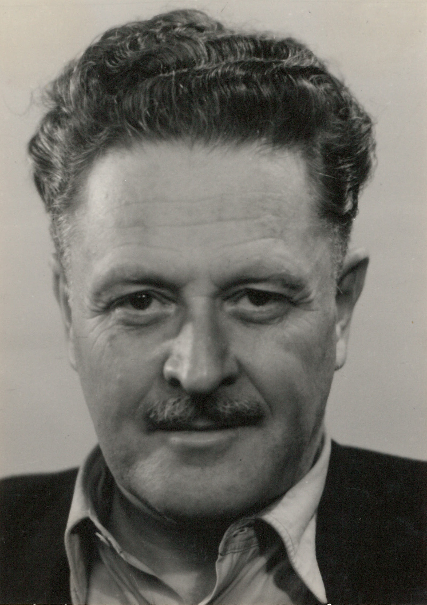

“Yaşamak bir ağaç gibi tek ve hür ve bir orman gibi kardeşçesine.”
Biography
Nâzım Hikmet Ran (1902–1963), Türk şiirinin en yenilikçi ve etkili isimlerinden biridir. Modern Türk şiirine serbest nazmı kazandırarak, geleneksel biçimlerin dışına çıkmıştır.
Hayatı boyunca toplumcu bir bakış açısını benimsemiş, eserlerinde özgürlük, adalet, emek ve insan sevgisi temalarını işlemiştir. Şiirlerinin yanı sıra oyun, roman ve mektuplarıyla da Türk edebiyatında derin izler bırakmıştır.
Politik düşünceleri nedeniyle defalarca hapsedilmiş ve uzun yıllarını sürgünde geçirmiştir. Ancak, tüm zorluklara rağmen edebi üretimini sürdürmüş ve dünya çapında tanınmıştır.
Major Works
- 835 Satır (1929)
- Memleketimden İnsan Manzaraları (1941–1950)
- Kuvâyi Milliye Destanı (1939)
- Taranta-Babu’ya Mektuplar (1935)
- Yaşamak Güzel Şey Be Kardeşim (1962)